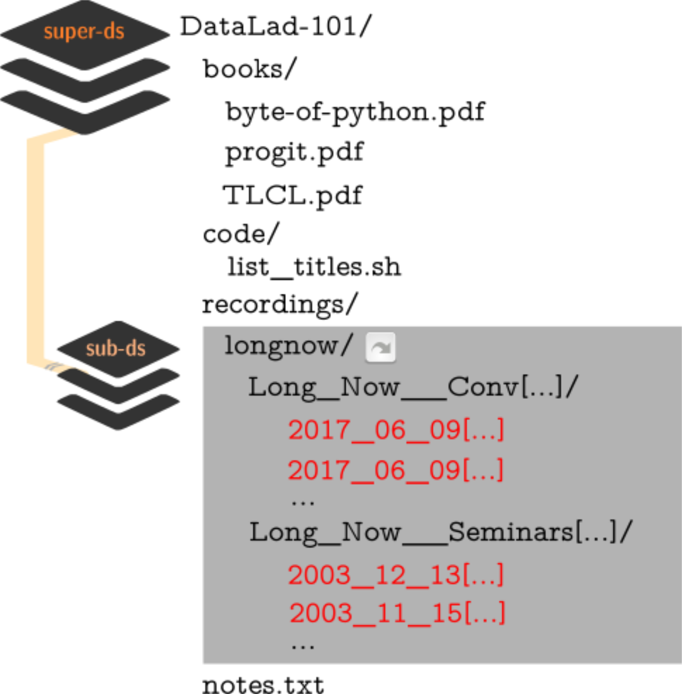
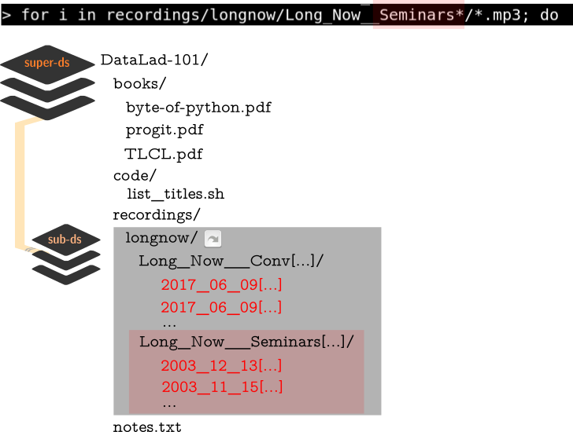

Data management
Reproducible analysis

Reproducible analyses are hard...
Reproducible analyses are hard...

Reproducible analyses are hard...
- Which script/unrecorded point-and-click in a GUI produced this figure?
Reproducible analyses are hard...
- If I found the correct script, what version of this script produced the result?
Reproducible analyses are hard...
- If I know the correct code and correct version, what input data are all these outputs based on?
Reproducible analyses are hard...
- And finally: How do I execute the analysis script I want to recompute?
After a while...

for i in recordings/longnow/Long_Now__Seminars*/*.mp3; do
# get the filename
base=\$(basename "\$i");
# strip the extension
base=\${base%.mp3};
# date as yyyy-mm-dd
printf "\${base%%__*}\t" | tr '_' '-';
# name and title without underscores
printf "\${base#*__}\n" | tr '_' ' ';
done
⮊ A for loop in shell, will print each file name as
Date - Speaker - Title to the terminal.
⮊ Redirection to a file with > writes the stream to a file instead of the terminal.
⮊ Note: This could be any script or shell command!
A basic datalad run command
-
Wrapping any command* in a datalad run
will record the command's impact on the dataset to the history.
Run-records link dataset modifications to commands
commit f4a35c8841062eb58f65dbf3cde70ccdc3c9df68 (HEAD -> master)
Author: Adina Wagner adina.wagner@t-online.de
Date: Mon Nov 11 09:55:02 2019 +0100
[DATALAD RUNCMD] create a list of podcast titles
=== Do not change lines below ===
{
"chain": [],
"cmd": "bash code/list_titles.sh > recordings/podcasts.tsv",
"dsid": "02a84dae-faf5-11e9-ba9f-e86a64c8054c",
"exit": 0,
"extra_inputs": [],
"inputs": [],
"outputs": [],
"pwd": "."
}
^^^ Do not change lines above ^^^
diff --git a/recordings/podcasts.tsv b/recordings/podcasts.tsv
new file mode 100644
index 0000000..f691b53
--- /dev/null
+++ b/recordings/podcasts.tsv
@@ -0,0 +1,206 @@
+2003-11-15 Brian Eno The Long Now
+2003-12-13 Peter Schwartz The Art Of The Really Long View
+2004-01-10 George Dyson There s Plenty of Room at the Top Long term Thinking About Large scale Computing
[...]
It follows logically: If a command does not lead to any modification in a dataset, it will not be recorded!
Oh! An error in the code...
DataLad-101 layout:
Oh! An error in the code...
DataLad-101 layout:
datalad rerun
- Re-execute previous datalad run commands
- What shall be rerun can be specified via its commit hash:
datalad rerun f4a35c884106- ... but also via tag, revision specifications with
HEAD, ..., or by giving a range of commits.
Summary - Basic datalad run
datalad runrecords a commands impact on a dataset.- A record is only made if the command leads to dataset modifications
- The command captures provenance for humans and machines
- a machine-readable runrecord is automatically created, you need to provide a commit message.
datalad reruncan take any previousdatalad runcommit hash and re-execute it.- This saves you the need to remember!
datalad diffandgit diffare useful helpers to explore changes between version states of a dataset.
... but there is more that this command can do for you:
The anatomy of DataLad error messages
"convert -resize 400x400 recordings/longnow/.datalad/feed_metadata/logo_salt.jpg recordings/salt_logo_small.jpg"
[INFO ] == Command start (output follows) =====
convert-im6.q16: unable to open image `recordings/longnow/.datalad/feed_metadata/logo_salt.jpg': No such file or directory @ error/blob.c/OpenBlob/2874.
convert-im6.q16: no images defined `recordings/salt_logo_small.jpg' @ error/convert.c/ConvertImageCommand/3258.
[INFO ] == Command exit (modification check follows) =====
[INFO ] The command had a non-zero exit code. If this is expected, you can save the changes with 'datalad save -d . -r -F .git/COMMIT_EDITMSG'
CommandError: command 'convert -resize 400x400 recordings/longnow/.datalad/feed_metadata/logo_salt.jpg recordings/salt_logo_small.jpg' failed with exitcode 1
Failed to run 'convert -resize 400x400 recordings/longnow/.datalad/feed_metadata/logo_salt.jpg recordings/salt_logo_small.jpg' under '/demo/DataLad-101'. Exit code=1.--input in datalad run
-
Files provided with the --input option are automatically retrieved
with datalad get, if necessary.
Content-locked files (vastly simplified)

- Files are given to Git-annex or Git
- Based on dataset configuration about file type, size, or name.
- Git-annex removes write permission from the file content it stores.
- This prevents accidental modifications.
datalad unlockcan unlock content for modification.datalad savewill lock content again.
--output in datalad run

-
Files provided with the --output option are automatically unlocked for
modification with datalad unlock, if necessary.
Analysis provenance capture
Easy provanance capture!
 Advice:
Advice:
- use
--inputand--output - Attach helpful commit messages
- Make sure to have a clean dataset state
Summary - Reproducible execution with datalad run
datalad runrecords a commands impact on a dataset.- This usually requires a "clean" dataset status (no unsaved modifications)
- --input to the datalad run command gets retrieved (if necessary) prior to command execution.
- This is done with a datalad get in the background.
- --output to the datalad run command gets unlocked (if necessary) for modification prior to command execution.
- This is done with a datalad unlock in the background.
Outlook: computational reproducibility
- It may not be enough to record inputs, code, and outputs of an analysis!
- Without sufficient information about required software (versions), analyses may fail to reproduce or even run.
- The DataLad extension datalad containers can also capture complete software environments.
- Get a preview soon: chapters on extensions is close to being finished
Now what I can do with that?
- Reproducible analysis with datalad run
Practice @home
- Wrap any simple shell command (e.g.,
cp) in a datalad run, and (later) also scripts of yours
Further reading
- A walk-through on
datalad run: - - Chapter DataLad, Run! in the handbook.
- More on the configurations that determine whether a file is managed by Git or Git-annex:
- - Chapter Tuning datasets to your needs in the handbook
- How to get help on commands and their options:
- - Section How to get help in the handbook
Backup slides for anticipated questions
How does a here-document work?
$ cat << EOT > notes.txt
One can create a new dataset with 'datalad create [--description] PATH'.
The dataset is created empty
EOT
- Two delimiting identifiers (EOT) wrap any amount of text into a stream
- The
<<characters redirect the stream into standard input for thecatcommand - The
>character redirects the standard output ofcatand writes it into a new filenotes.txt
Why is it used?
- Allows pretty formatting (e.g., line breaks)
- Allows writing documents from the terminal